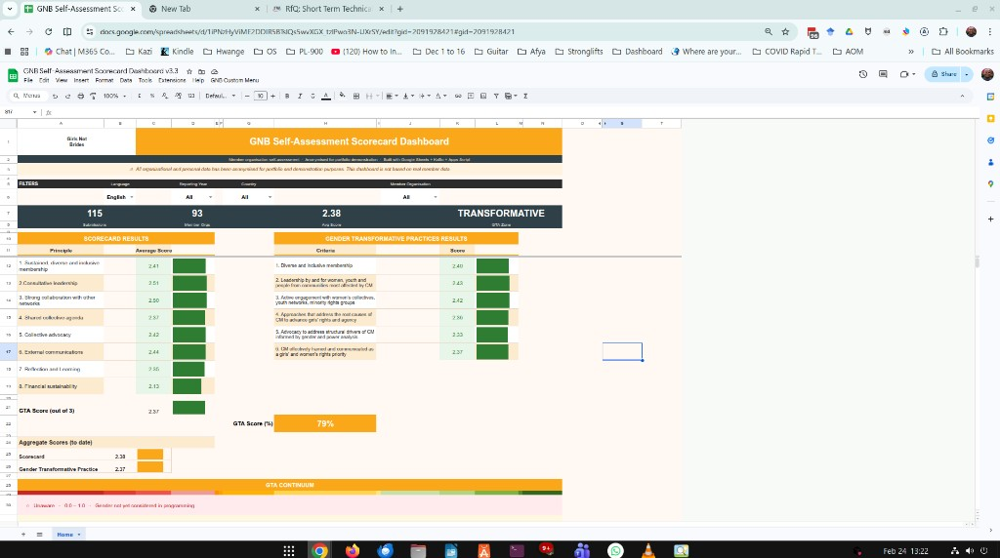

Project 02
Live
Member Self-Assessment Scorecard Dashboard
Context: Multi-country civil society partnership · Girls Not Brides (anonymised)
The problem: A global civil society network needed to track member organisations' performance across 8 governance principles and 6 gender-transformative practice (GTP) indicators — across multiple countries, languages, and reporting years — without requiring specialist software.
What was built:
- Live-connected Google Sheet pulling from KoBo via Apps Script (Token auth)
- Dynamic scorecard: avg scores per principle, RAG conditional formatting
- GTP results table with Gender Transformative Approach (GTA) continuum visualisation
- Cascading filters (Year → Country → Org) with KPI chips (Submissions, Avg Score, GTA Zone)
- Full multilingual UI — English / French / Portuguese / Spanish
- Data anonymised; all scripts in GitHub
KoBo Toolbox EU
Google Sheets
Google Apps Script
Python (anonymisation)
clasp